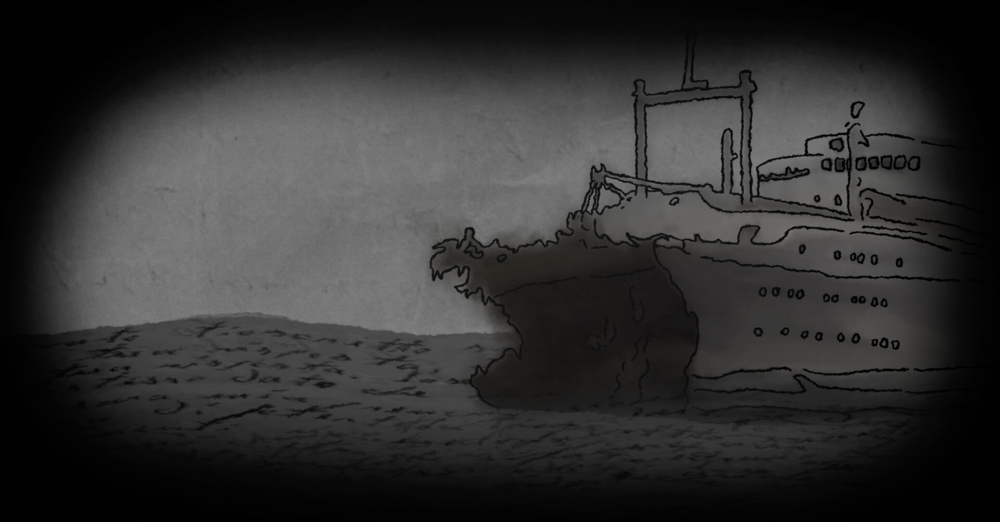
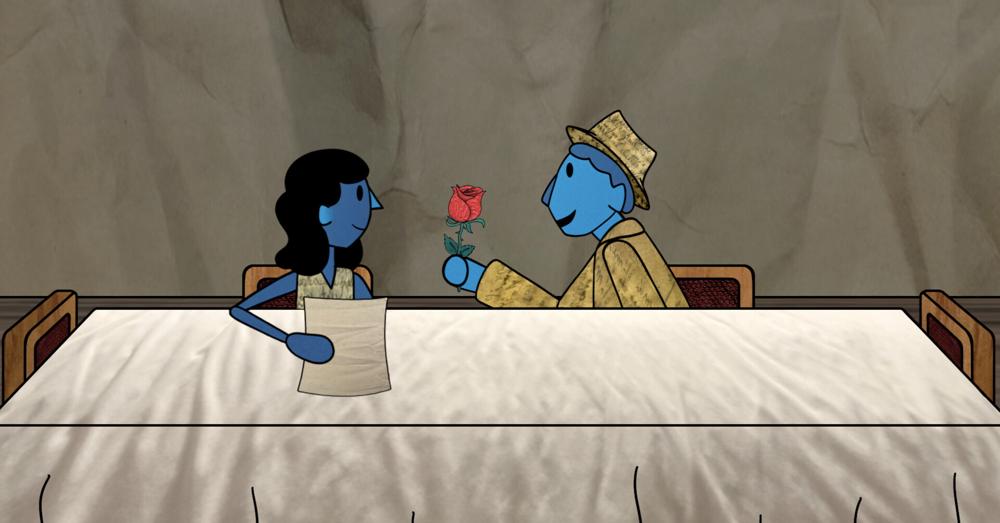
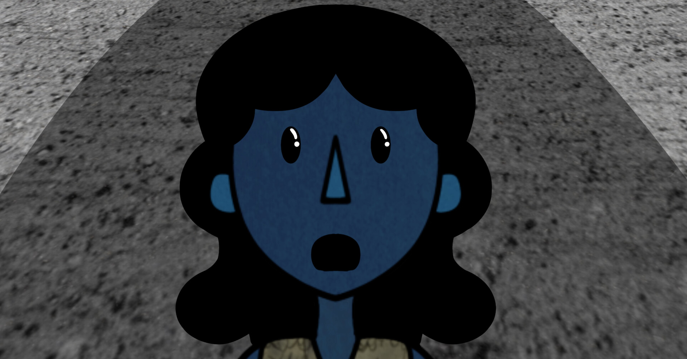
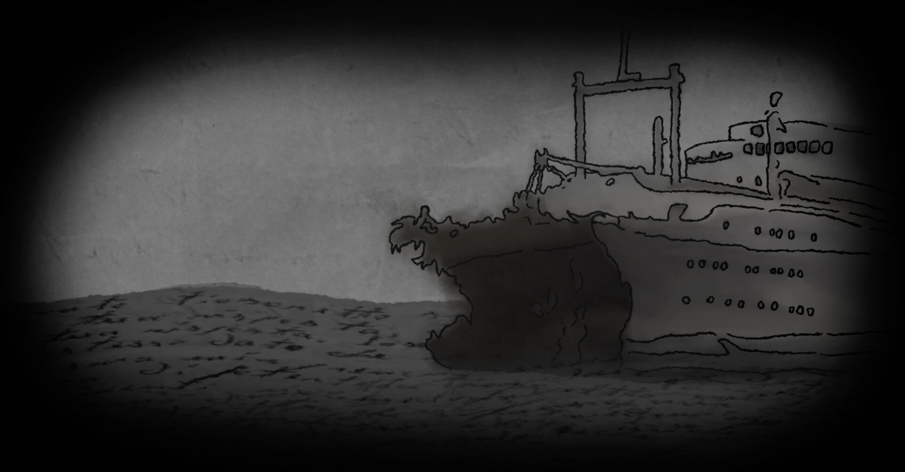
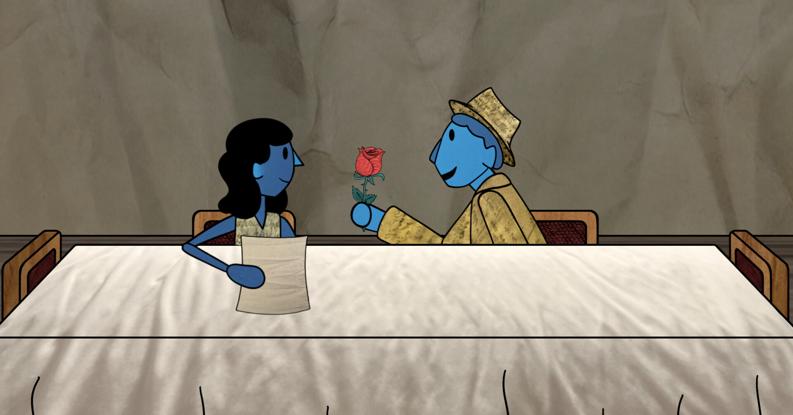
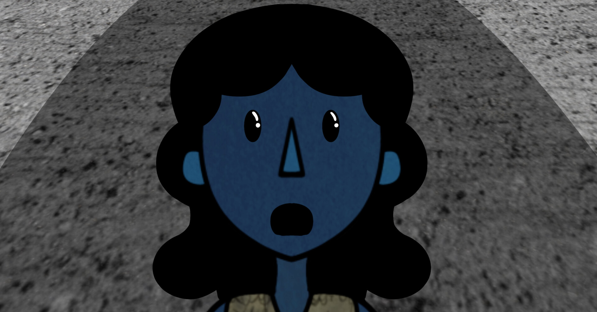

The Andrea Doria's Last Message
Synopsis
An Italian grandmother tells the story of her immigration to North America on the Andrea Doria, a ship, which later sank during the voyage she was originally supposed to be on. This film is based on true events.
Credits
- Narration by Rosa Boiardi
- Supervion by Shira Avni
- Music composition by Sam Kadoura
- Sound Mix by Tom Horlor
Duration: 2 minutes and 51 seconds
Director: Jasmin Rose Guerrera
Year: 2024
Production Process
1. Collecting and Scanning
After collecting and organizing Rosa's letters and postcard, a light table was used to create a diverse range of textures. This was achieved by overlapping multiple letters and postcards over the light and photographing the results.
2. Assets and Rigging
Backgrounds and props were drawn in Procreate, colored with photographs of textures and then exported into After Effects. The characters were rigged using DUIK Bassel 2 and Puppet pins.
3. Animating!
The film was largely animated in After Effects, except for the main character’s hair, which was animated in Procreate. The sinking ship scene was also animated in Procreate and rotoscopied from previously recorded footage.
Budget
Materials and Software Used
- Used iPad Pro12.9 inch $900
- 2 External Hard drive 2TB LaCie $280
- Light table and scanner $150
- Laptop Macbook Pro 2019 $1000
- Adobe After Effects $29.99/month (8 months=$240)
- Adobe Premiere Pro $29.99/month ($240$)
- Procreate $14
- Audacity, freesound.org and Voice Record Pro FREE
- Pro Tools $129
- Letters and Postcards FREE
- Yarn, Construction paper and wood $25
Hardware
Animating and Editing Software
Audio Software
Miscellaneous Materials
Total Cost: CAD $2, 978
Production Labour
- Scanning and taking pictures of textures (8 hours)
- Rigging (28 hours)
- Backgrounds and assets (32 hours)
- Rough Animation in After Effects (332 hours)
- Rotoscopy (11 hours)
- Rosa’s extra hair Animation scenes (12 hours)
- Clean Animation (fixing up small details) (15 hours)
- Title and subtitles (2 hours)
- Sound Editing (8 hours)
- Foley (7 hours)
- Music Composition by Sam Kadoura (12 hours)
- Sound mix (1 hour)
Media Prep
Animating
Audio
Total Labour: 468 hours
Film Festival Appearances
- Meet Film Festival (Finalist)
- International Film Festival on Cultural Tourism (Finalist)
Film Stills
 




